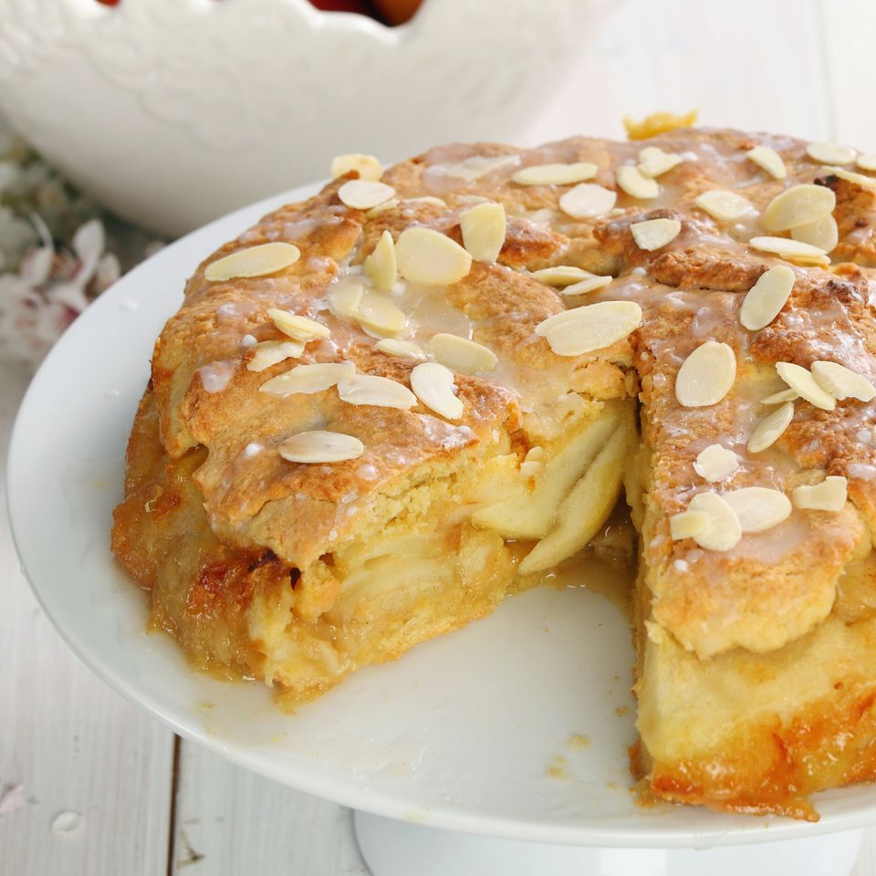

Apfelkuchen

Schnellster und leckerster Apfelkuchen der Welt
Zutaten
- 250 Gramm Mehl
- 100 Gramm Zucker
- 1 Packung Backpulver
- 1 Packung Vanillezucker
- 2 Eier
- 100g flüssige Butter
- 125g Milch
- 6 Äpfel
- 50g Mandelkerne
- 2 Esslöffel Zucker
- 1 Esslöffel Wasser
- Puderzucker
- Den Backofen auf 180°C Umluft vorheizen.
- Mehl, Eier, Milch, 100g Zucker, Vanillezucker und Backpulver in eine Schüssel geben und mit einem Schneebesen verrühren. Die flüssige Butter dazugeben und alles zu einem glatten Teig verrühren.
- Die Äpfel schälen, vierteln und entkernen. Die Mandelkerne grob brechen oder hacken und mit 2El Zucker und 1El Wasser in einer Schüssel verrühren.
- Den Teig in die Auslaufform geben und gleichmäßig verteilen. Die Äpfel seitlich in den Teig drücken und die Mandeln darüber verteilen. Den Kuchen für 50 Minuten in den vorgeheizten Backofen geben. Mit Puderzucker bestreuen und servieren.